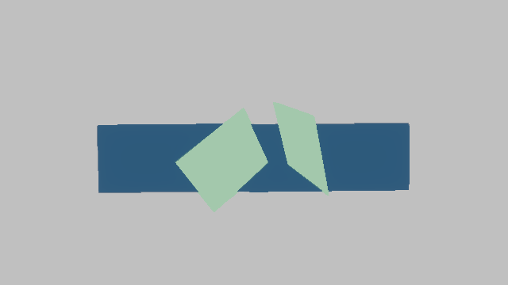

suite: animation generated: 2026-06-27T19:27:26Z
| Target | Status | Preview | Diff |
|---|---|---|---|
| final_color | captured capture_written |  | |
| motion_vectors | captured capture_written |
| ID | Metric | Status | Actual |
|---|---|---|---|
| velocity_pass_present | renderer.aa.velocity_passes | pass passed | 1 |
| animated_responsive_present | renderer.aa.velocity_animated_responsive | pass passed | 3 |
| animated_velocity_discontinuity_seen | renderer.aa.velocity_edge_discontinuity_estimate | pass passed | 1 |
| ID | Metric | Statistic | Status | Actual | Samples |
|---|---|---|---|---|---|
| animated_responsive_stable | renderer.aa.velocity_animated_responsive | min | pass passed | 3 | 9 |
| history_valid_during_animation | renderer.aa.history_valid | min | pass passed | 1 | 9 |